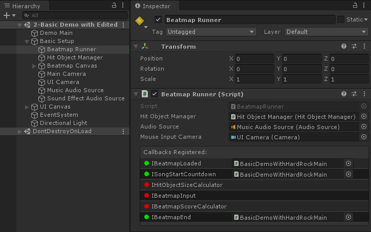

Customizing the Beatmap
You can tweak any value in the Beatmap by implementing IBeatmapLoaded:
public class BasicUsage : UnityEngine.MonoBehaviour, MouseDance.Runtime.Callbacks.IBeatmapLoaded
{
public MouseDance.Runtime.BeatmapRunner _beatmapRunner;
public UnityEngine.TextAsset _osuFile;
public UnityEngine.AudioClip _song;
void Start()
{
_beatmapRunner.SetOnBeatmapLoaded(this);
_beatmapRunner.LoadAndStart(_osuFile, _song);
}
public void OnBeatmapLoaded(OsuParsers.Beatmaps.Beatmap beatmap)
{
// Mimic the effects of Hard Rock modifier:
beatmap.DifficultySection.CircleSize *= 1.3f;
beatmap.DifficultySection.ApproachRate *= 1.4f;
beatmap.DifficultySection.HPDrainRate *= 1.4f;
beatmap.DifficultySection.OverallDifficulty *= 1.4f;
// Flip Hit Objects vertically:
const float CENTER_Y = MouseDance.Runtime.GraphicsUtil.OSU_PIXELS_CENTER_Y;
var hitObjects = beatmap.HitObjects;
for (int i = 0, len = hitObjects.Count; i < len; i++)
{
var pos = hitObjects[i].Position;
pos.y = ((pos.y - CENTER_Y) * -1) + CENTER_Y;
hitObjects[i].Position = pos;
if (hitObjects[i] is OsuParsers.Beatmaps.Objects.Slider slider)
{
// if this is a Slider, do the same thing for the Slider Points
for (int p = 0, pCount = slider.SliderPoints.Count; p < pCount; p++)
{
var sliderPoint = slider.SliderPoints[p];
sliderPoint.y = ((sliderPoint.y - CENTER_Y) * -1) + CENTER_Y;
slider.SliderPoints[p] = sliderPoint;
}
}
}
}
}
Note that BeatmapRunner.SetOnBeatmapLoaded is called before starting the beatmap.
OnBeatmapLoaded is called right before the song starts. It is only called once for every .osu file that has just been loaded. It is not called repeatedly when the song is restarted.
The list of all Hit Objects is in beatmap.HitObjects. You can edit this freely, even remove from the list or add to it.
Warning
If your OnBeatmapLoaded doesn't seem to be getting called, check if you've properly called BeatmapRunner.SetOnBeatmapLoaded.
For every BeatmapRunner, there can be only one active IBeatmapLoaded in use.
BeatmapRunner in the Inspector will show you which callbacks have been registered. The one labeled IBeatmapLoaded should be green once the game is running.
The name of the registered callback's concrete type will be displayed (namespace and class name). If it is a MonoBehaviour type, it'll show the actual file instead. You can click on that to ping it in the Project tab.

This GUI is only for debugging. It is not designed or intended to register callbacks from the GUI.